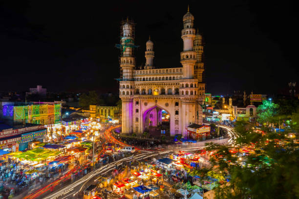

Charminar Images
Historical Significance: Charminar is a historic monument located in Hyderabad, India.
It was built in 1591 by Sultan Muhammad Quli Qutb Shah, the fifth ruler of the Qutb Shahi
dynasty, to commemorate the end of a deadly plague that ravaged the city. The structure is
a symbol of Hyderabad’s rich cultural heritage and architectural prowess, lending elements
of Persian, Indian, and Islamic styles.
